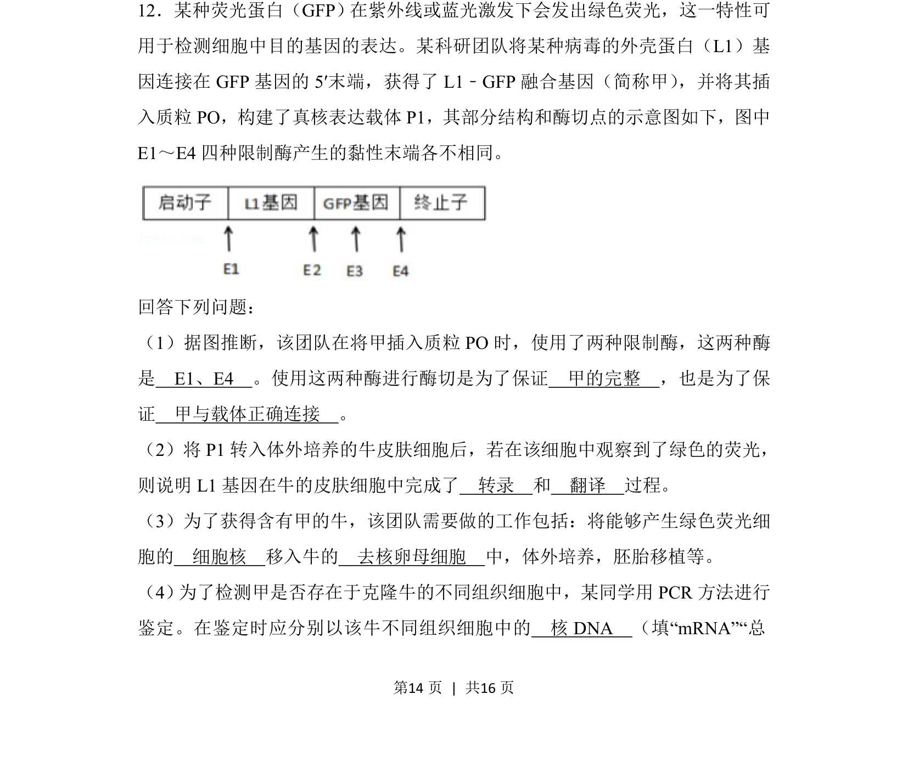
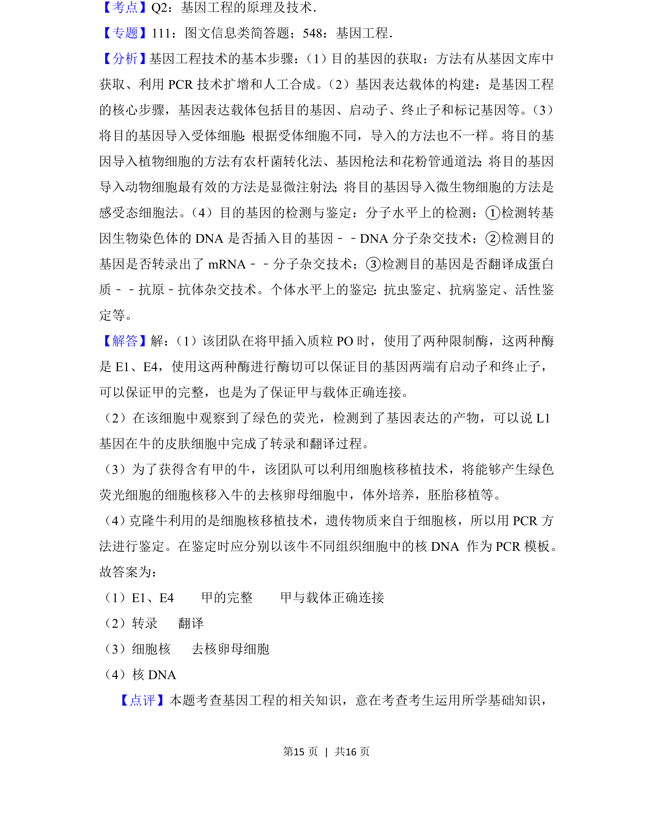

考点：限制酶 基因表达 细胞核移植 PCR鉴定

该题考查基因工程中载体构建、基因表达检测及克隆技术的应用。

📄 原 PDF 第 14 页：
素材/真题/吉林/2008-2024·（吉林）生物高考真题/2018年高考生物试卷（新课标Ⅱ）（解析卷）.pdf
12．某种荧光蛋白（GFP）在紫外线或蓝光激发下会发出绿色荧光，这一特性可 用于检测细胞中目的基因的表达。某科研团队将某种病毒的外壳蛋白（L1）基 因连接在GFP基因的5′末端，获得了L1﹣GFP融合基因（简称甲） ，并将其插 入质粒PO，构建了真核表达载体P1，其部分结构和酶切点的示意图如下，图中 E1～E4四种限制酶产生的黏性末端各不相同。 回答下列问题： （1）据图推断，该团队在将甲插入质粒PO时，使用了两种限制酶，这两种酶 是 E1、E4 。使用这两种酶进行酶切是为了保证 甲的完整 ，也是为了保 证 甲与载体正确连接 。 （2）将P1转入体外培养的牛皮肤细胞后，若在该细胞中观察到了绿色的荧光， 则说明L1基因在牛的皮肤细胞中完成了 转录 和 翻译 过程。 （3）为了获得含有甲的牛，该团队需要做的工作包括：将能够产生绿色荧光细 胞的 细胞核 移入牛的 去核卵母细胞 中，体外培养，胚胎移植等。 （4） 为了检测甲是否存在于克隆牛的不同组织细胞中，某同学用PCR方法进行 鉴定。在鉴定时应分别以该牛不同组织细胞中的 核DNA （填“mRNA”“总